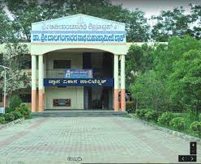

My name is Mahamad Abdulah, and I am from Birgunj Nepal. I completed my higher studies
in Dokaila and Diploma from Gnana vikas polytechnic, Chitradurga. where I am pursuing a B.E degree
from Cambridge Institute of Technology.
My interest lies in mathematics, and later, I found myself interested in coding as well, making this
discipline the perfect choice for me.
I am a bit of a bookworm, but when I am not studying, you will find me watching movie and listening music. my hobby watching movie and I use my free time to watch movie.
If I had to describe myself in one word, it would be dynamic as I accept challenges with a positive spirit,
and I am always eager to learn.
During my Bachelor's degree in Electrical Engineering, I have designed and developed
electrical circuits and systems using software tools such as AutoCAD and MATLAB. I have also worked on
academic projects that involved developing web applications using HTML, CSS, JavaScript, and Java. Additionally,
I have used MATLAB for data analysis and optimization to solve various engineering problems. I feel that my superior problem-solving abilities and solid analytical abilities will allow me to meaningfully contribute to a dynamic team. I can collaborate and communicate well, which will help me work with coworkers and stakeholders efficiently. As a new employee, I am
eager to use my abilities and educational background to support a dynamic team and gain knowledge from more seasoned
business people.
Ai Based Unmanned Vehicles for Survillance and Protection
In this project, we designed and developed an AI-based unmanned vehicle for
surveillance and protection. The project aimed to create an autonomous vehicle
that could be used for surveillance and protection in various settings, such as
border patrol, public safety, and military operations. The system consisted of a
remotely controlled vehicle, AI algorithms, and various sensors and cameras for
data collection.
AI-based unmanned ground vehicles for surveillance and protection with
360 cameras work by using advanced sensor technology and artificial intelligence algorithms to detect
and respond to potential threats. The vehicles are equipped with a 360-degree camera, which captures a
panoramic view of the surroundings.
The cameras can capture high-quality video footage and images, which are then
analyzed by AI algorithms in real-time. The AI algorithms can detect and track people,
vehicles, and objects of interest, allowing the vehicle to respond appropriately to potential threats.
For example, if the vehicle detects an intruder, it can alert security personnel or activate an alarm.
In addition to the 360-degree camera, unmanned ground vehicles can also be equipped with other sensors,
such as lidar, radar, and thermal imaging cameras, to provide additional situational awareness. The data collected by
these sensors is processed by AI algorithms to identify potential threats and respond accordingly.
These vehicles can operate autonomously, with pre-programmed routes and actions, or they can be remotely
controlled by human operators. They can be used in a variety of settings, including military and border security,
public safety, and commercial applications.
Overall, AI-based unmanned ground vehicles with 360 cameras provide an effective and efficient way to enhance
surveillance and protection in various settings. With advancements in sensor technology and AI algorithms, these vehicles
will continue to evolve and become an integral part of security systems in the future.
Regeneration of electricity with fan using PMSG
In this project, we designed and developed a system that uses a fan and a
Permanent Magnet Synchronous Generator (PMSG) that are coupled together to
regenerate electricity. The project aimed to demonstrate the potential of using a
fan to produce electricity, especially in areas where fan rotates continously. The
system consisted of a PMSG, a rectifier circuit, and a battery bank to store the
regenerated electricity.
The regeneration of electricity using a fan and a PMSG (Permanent Magnet Synchronous
Generator) works by converting the mechanical energy of the fan into electrical energy using the PMSG.
When the fan rotates, it generates mechanical energy. The mechanical energy is then transferred to
the PMSG, which converts it into electrical energy through electromagnetic induction. The PMSG is equipped
with permanent magnets that create a magnetic field that interacts with the rotating magnetic field
created by the fan's rotor, inducing an electrical current in the stator coils.
The electrical energy produced by the PMSG can be used to power other devices or can be
stored in a battery for later use. This system is often used in renewable energy applications,
such as wind turbines and hydroelectric power plants, to harness the power of natural sources of energy.
The PMSG system is highly efficient, as it can generate electricity with minimal friction and
mechanical losses. Additionally, the use of permanent magnets in the PMSG eliminates the need for
a separate power source to create a magnetic field, making it more cost-effective and reliable.
Overall, the regeneration of electricity using a fan and a PMSG is a practical and sustainable
way to generate electricity from mechanical energy. It can be used in a variety of applications, such
as energy harvesting and renewable energy systems, to provide a reliable source of electricity.
Hybrid Power Plant Generation of Electricity
In this project, we designed and developed a system that uses a fan and a
Permanent Magnet Synchronous Generator (PMSG) that are coupled together to
regenerate electricity. The project aimed to demonstrate the potential of using a
fan to produce electricity, especially in areas where fan rotates continously. The
system consisted of a PMSG, a rectifier circuit, and a battery bank to store the
regenerated electricity.
A hybrid power plant is a system that combines two or more types of power
generation technologies to produce electricity. The most common types of technologies used in a
hybrid power plant are renewable energy sources such as solar, wind, and hydro, and non-renewable
energy sources such as diesel or gas generators.
The working of a hybrid power plant involves using the renewable energy sources to generate
electricity during peak times, while the non-renewable energy sources are used during off-peak
times or when renewable energy sources are not available.
For example, during the day, when there is ample sunlight, solar panels can generate
electricity, and excess energy can be stored in batteries for use at night or when there
is no sunlight. Similarly, wind turbines can generate electricity when there is wind, and
the excess energy can be stored in batteries or used to power the grid.
During times when renewable sources are not available, the non-renewable sources
such as diesel or gas generators can be used to provide a continuous supply of electricity
to the grid. The hybrid power plant system can be automated to switch between different energy
sources based on the availability and demand of electricity.
The use of a hybrid power plant offers several advantages, such as reducing dependence
on non-renewable energy sources and reducing carbon emissions. It also provides a more reliable
source of electricity, as the different energy sources complement each other, ensuring a steady
supply of electricity.
In conclusion, a hybrid power plant system is an innovative and sustainable way
to generate electricity. It offers a cost-effective and reliable source of energy that
can reduce our reliance on non-renewable energy sources and help mitigate the effects of
climate change.
My skills
My creative skills & experiences.
Being a recent Electrical Engineer with expertise in HTML, CSS, JavaScript, AutoCAD, and MATLAB,
I am well-suited to use my technical and creative skills in a range of industries. I have gained a
thorough understanding of electrical engineering fundamentals from my academic experiences, including
circuit design, schematic capture, and system integration. Also, I am familiar with agile project management
methodologies and have experience working with programming languages including Java, C, and JS.
During my Bachelor's degree in Electrical Engineering, I have designed and developed
electrical circuits and systems using software tools such as AutoCAD and MATLAB. I have also worked on
academic projects that involved developing web applications using HTML, CSS, JavaScript, and Java. Additionally,
I have used MATLAB for data analysis and optimization to solve various engineering problems. I feel that my superior problem-solving abilities and solid analytical abilities will allow me to meaningfully contribute to a dynamic team. I can collaborate and communicate well, which will help me work with coworkers and stakeholders efficiently. As a new employee, I am
eager to use my abilities and educational background to support a dynamic team and gain knowledge from more seasoned
business people.
HTML70%
CSS60%
JavaScript50%
Java70%
MySQL50%
MATLAB50%
Auto-CAD80%
Education
Cambridge Institute of Technology, Bangalore
BE. in Electrical and Electronics Engineering
2020-2023
7.5 CGPA

Gnana Vikas Polytechnic, Chitradurga
Diploma in Electrical and Electronics Engineering
2017-2020
79%
Uchcha Maadhyamik Vidyaalay, Dokaila Bahuari
SSLC
2017
61%
Contact me
Get in Touch
I'm an electrical engineer with experience in app development, therefore I'm always looking for new ways to use
what I know and who I am in original ways. If you're interested in contacting me to discuss potential projects
or possibilities, please feel free to do so using the information on my resume or LinkedIn profile.
I'd like to talk with you about how we can work together to create cutting-edge electrical engineering solutions.
Name
Mahamad Abdulah
Address
Rifco Shantiniketan Layout, Padmeshwari Nagar, Battarahalli Near sjes college Bangalore-560049